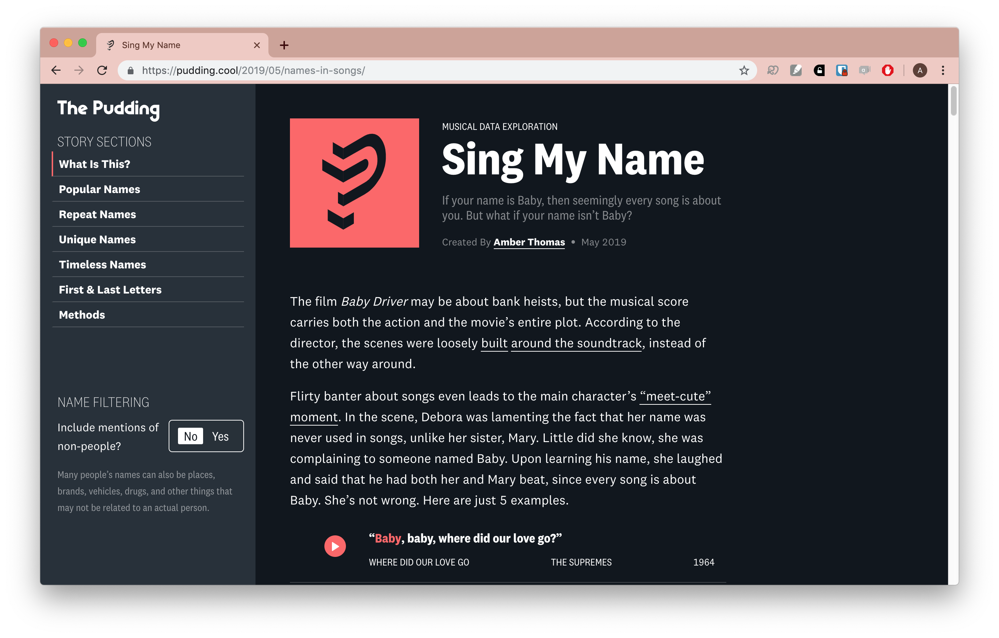
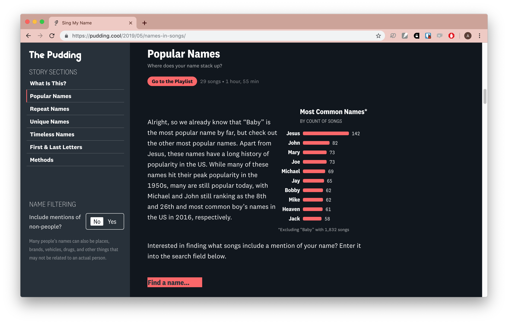
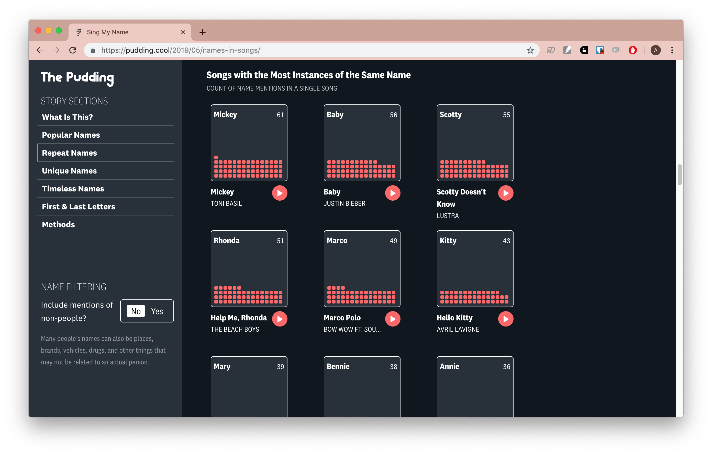
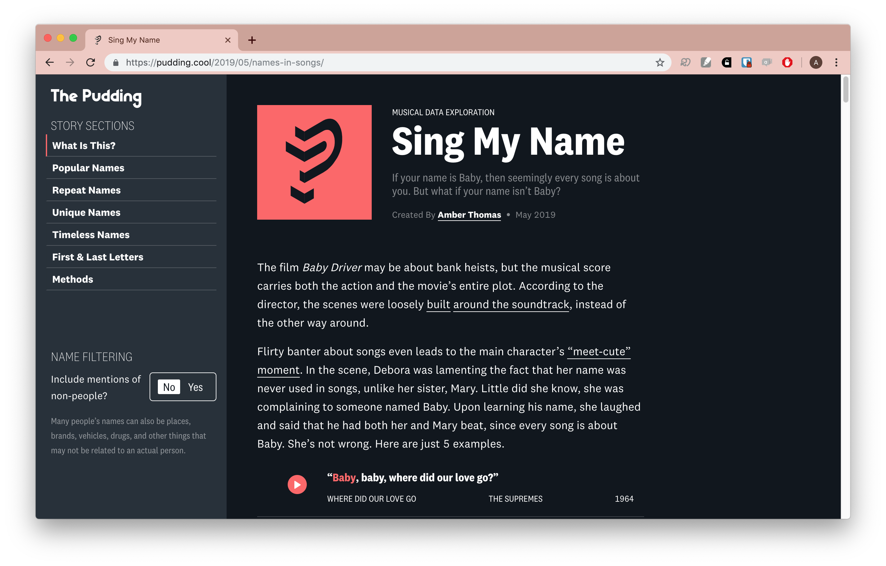
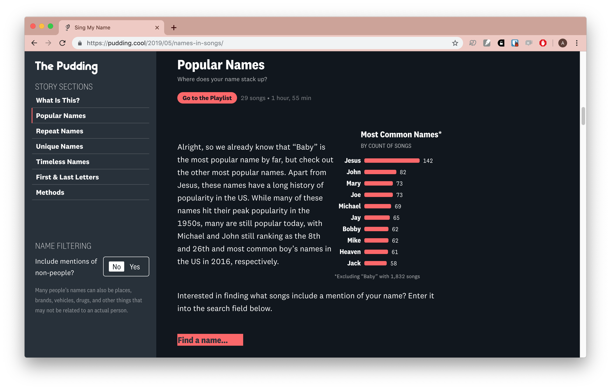
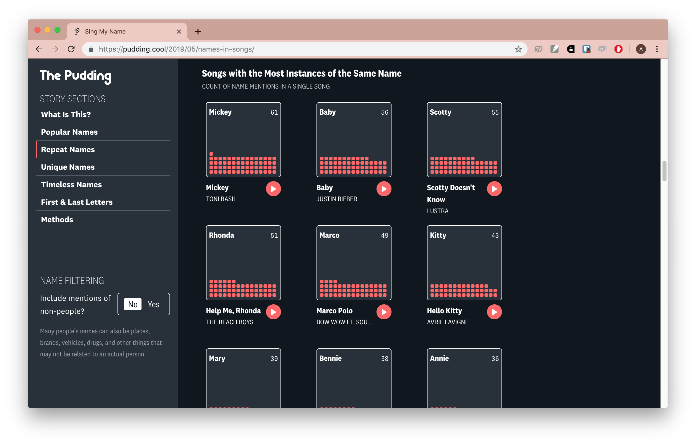

Screenshots


While watching the film Baby Driver, I became curious about a conversation between two of the characters. They had been talking about names, and more specifically which names are used in song lyrics. This project is my wandering through data trying to answer that question.
This story was primarily a solo project, but I am appreciative of Colin Morris’ help in attaining many of the song lyrics used in my analysis.
